Introduction
Hero is a platform designed to revolutionize the collectibles market by combining an innovative marketplace with customizable spaces to display collections. We’ve built a system where collectors can buy, sell, and showcase their items while benefiting from cutting-edge AI technology.
Hero’s AI-driven features provide seamless authentication of collectibles and accurate price predictions, helping collectors understand the true value of their items and anticipate future market trends.
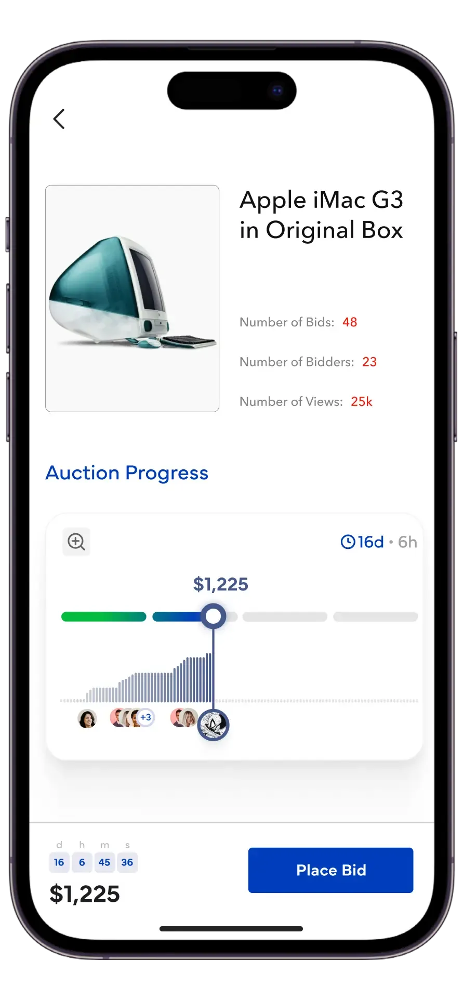
Problems
High Fees and Lack of Trust
Auction houses charge up to 35% in fees, and platforms like eBay are saturated with fake items, making transactions risky and expensive.
Difficult Authentication Process
Verifying collectibles traditionally requires expert evaluation, which is neither scalable nor efficient.
Complicated Valuations
Determining the true market value of collectibles is often a lengthy and imprecise process, adding frustration for both buyers and sellers.
Hero addresses these pain points with an innovative approach
Lower Transaction Costs with Secured Payments
Both buyers and sellers are fully ID-verified, with payments held in escrow to guarantee security.
AI-Powered Authentication
A proprietary AI model is designed to authenticate collectibles, eliminating the need for physical expert verification.
AI-Driven Valuation Predictions
The AI system not only provides accurate valuations based on current data but also predicts future values, offering collectors a deeper insight into the market trends.
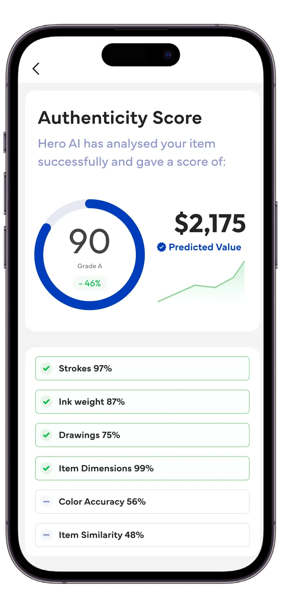
My Role
As the Product Designer and Project Manager, I played a central role in shaping the entire visual identity and user experience of Hero.
I led the User Experience Design by mapping end to end user journeys and defining detailed task flows for core actions such as onboarding, bidding, authentication, and valuation. These flows were built from real behavioural insights and helped align product, design, and engineering around a shared understanding of user intent, friction points, and success states.
I conducted generative user research through interviews and usability sessions with active collectors to uncover motivations, trust barriers, and decision making patterns across buying and selling. These insights directly informed information architecture, interaction design, and prioritisation of features.
I ran iterative usability testing across low fidelity wireframes and high fidelity prototypes, validating assumptions, stress testing critical flows, and refining edge cases before development.
Feedback from each testing round was translated into measurable UX improvements that reduced drop offs, increased task completion confidence, and strengthened overall trust in the platform.
Design Process
Wireframes & Prototypes
I began by mapping out user journeys, flows, and task flows to better understand the customer experience. We developed low-fidelity wireframes and interactive prototypes to test the initial user experience. Collectors participated in usability testing and interviews, providing crucial feedback to refine the design.
Minimum Viable Product (MVP)
I worked alongside engineers to design and launch the MVP. I collaborated closely with engineers ensuring technical feasibility and maintaining a high standard of quality throughout the development process. This allowed us to begin gathering pricing data, which was essential to training the AI's predictive pricing engine. The MVP focused on essential functionality, whereas the full launch included AI for authentication and valuation prediction.
User Interviews and Feedback
Continuous user feedback shaped the development process. For instance, we discovered that auctions without a reserve price increased item sale percentages, with a 93% higher final sale value compared to those with reserve prices.
Selling on Hero
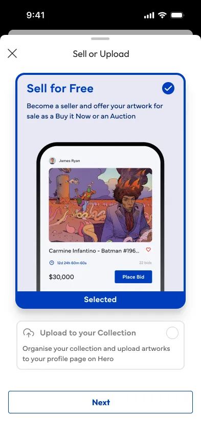
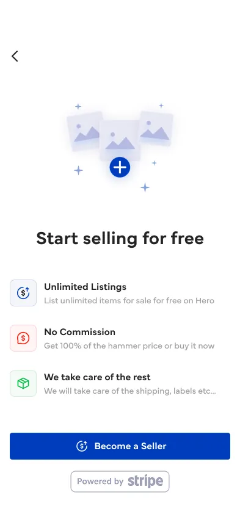
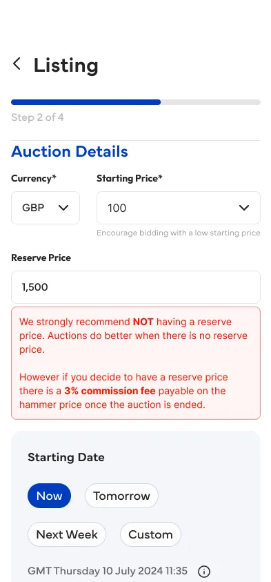
Additional Services
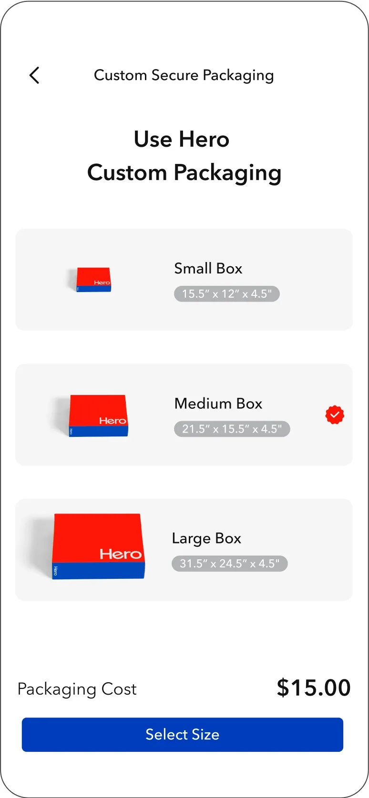
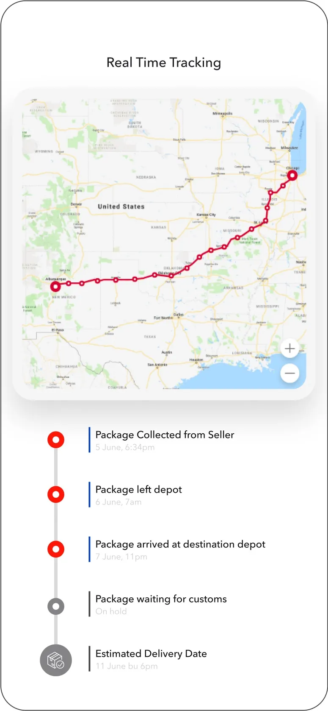
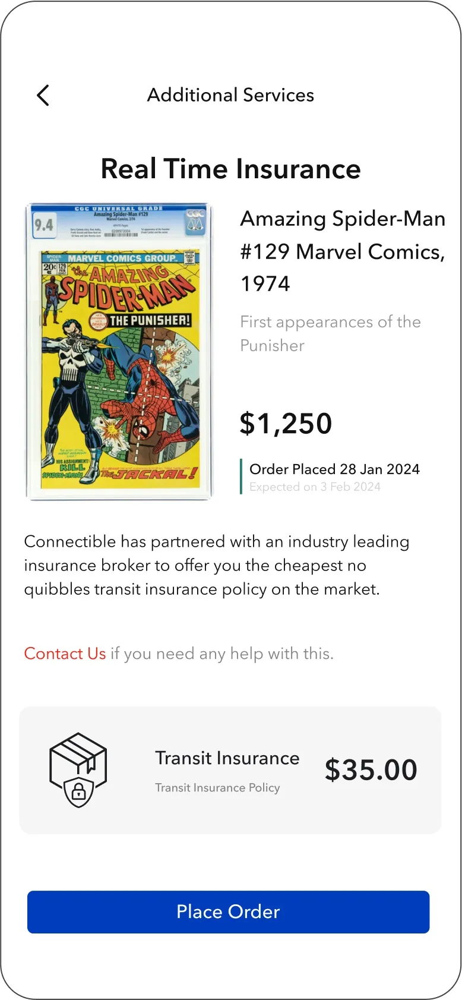
Pain Points and Solutions
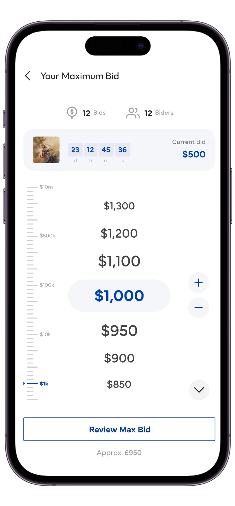
Scrollable Bidding Interface
I designed an intuitive, user-friendly bidding interface that provides collectors with a seamless experience.
The scrollable wheel encourages higher participation by making bid placement easy and engaging, which in turn drives up final prices as users are more inclined to place bids effortlessly.
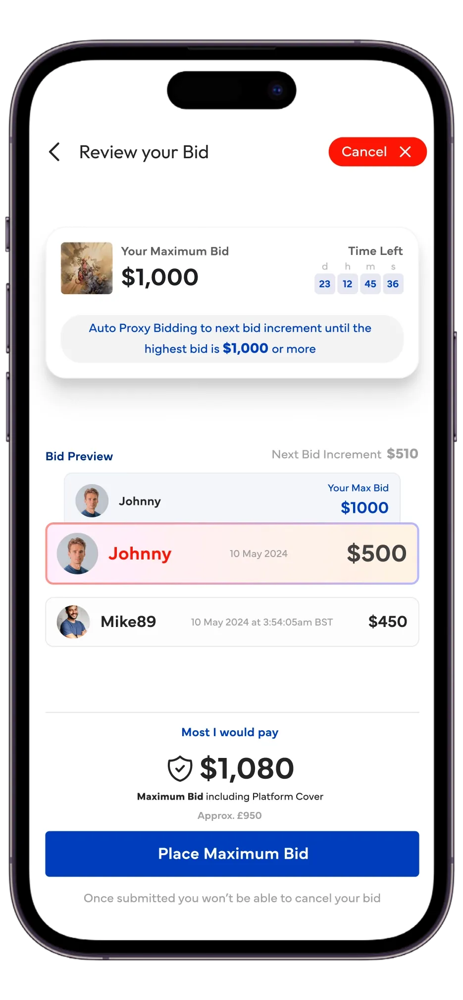
Two-Step Confirmation with Bid Preview
To prevent accidental bids and provide clarity on the final auction cost, we implemented a two-step confirmation process with a bid preview.
This feature addresses user concerns about mistakenly placing bids and offers a transparent view of all relevant details before confirming a bid, informed by insights gathered from user interviews and feedback.
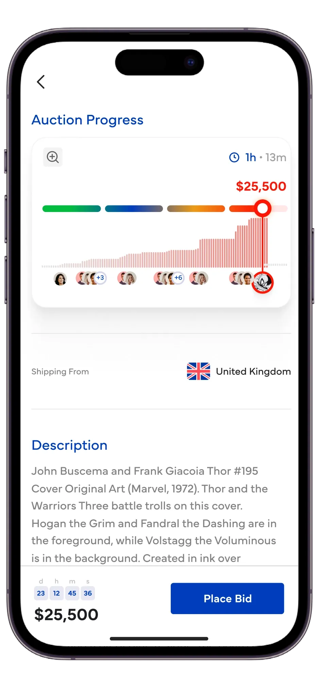
Auction Progress with Timeline
Instead of a traditional countdown timer, we created a dynamic, colour-based timeline that animates as the auction progresses.
This visually engaging feature allows users to quickly grasp how much time is left in the auction. Additionally, users can view bid history directly along the progress bar, making the auction experience more interactive and engaging, even without an auctioneer.
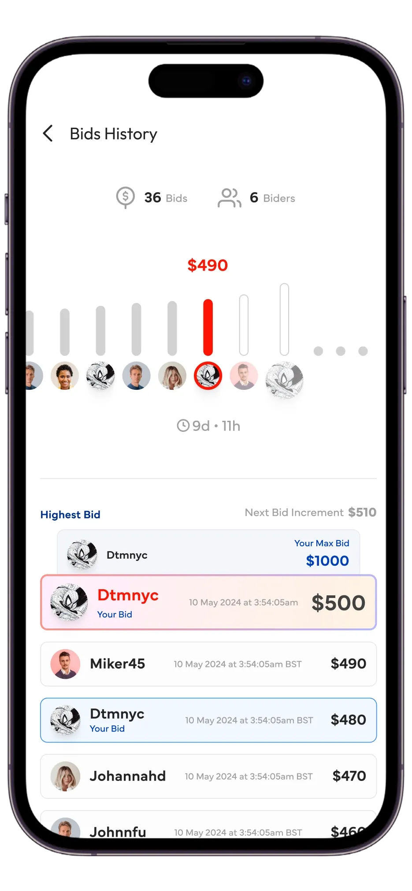
Scrollable Bid History
Drawing inspiration from SoundCloud’s comment player, the scrollable bid history offers users a clear, chronological view of previous bids.
This feature is not only functional but enjoyable to use, enhanced by haptic feedback on mobile devices, making the bidding process both practical and fun.
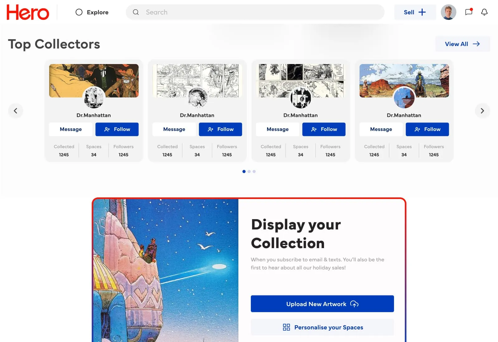
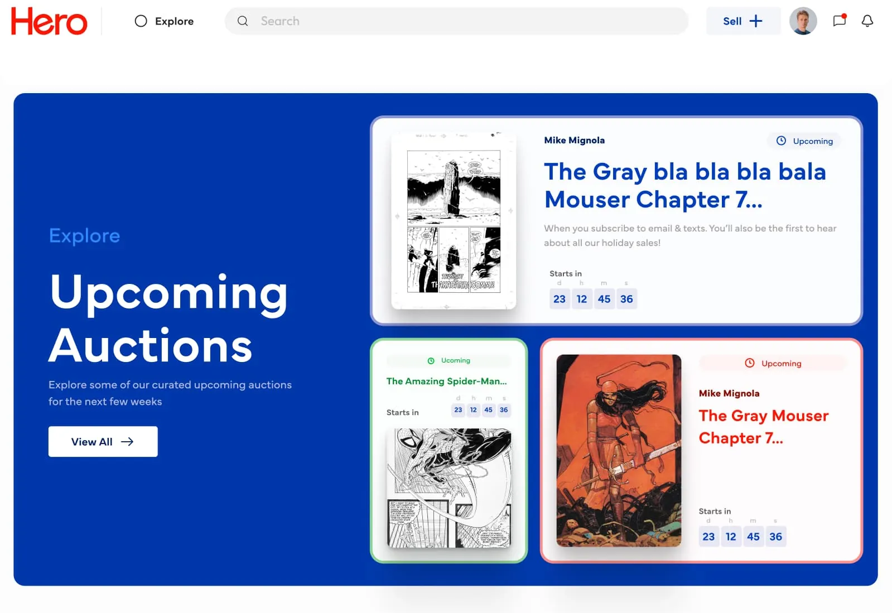
Takeaways
Designing Hero meant carefully balancing trust, transparency, and incentives. By making the experience simple and predictable, I reduced friction and increased both the quality and consistency of the data without reducing user confidence.
Hero showed how a marketplace and an AI product can strengthen each other when they are designed together. As the model improved, the experience became safer and more personal which encouraged more users to take part and generate better data.
This loop is the base for Hero’s next phase as a fully AI powered ecosystem where users can authenticate, value, and track their collections with growing accuracy over time.